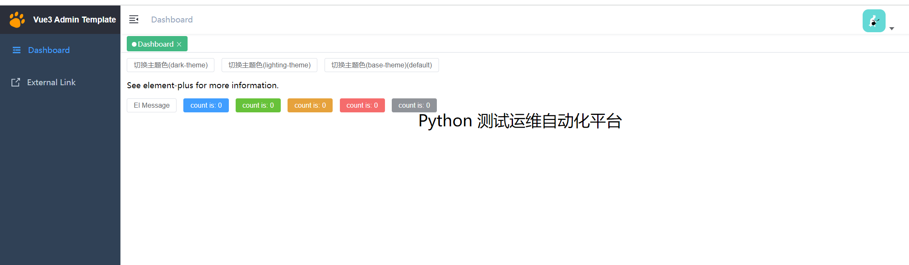
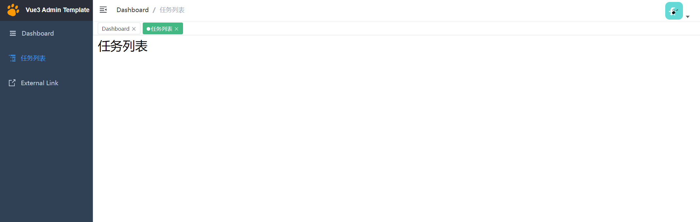
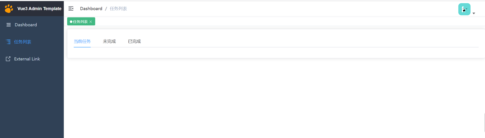

Contents
5.2. 案例实战-任务列表¶
本节是对Vue框架知识的一个复习与演练，以一个较简单的需求来练习之前学习过的知识点，包括Python基础语法及Vue、Flask、records等库。
通过任务列表这个简单的项目，读者可以更容易地理解Web开发中前后端分离的形式，并且能熟悉Web开发的基本流程和开发方式。
5.2.1. 1.需求说明及分析¶
为了把之前介绍的前后端知识完整地结合起来，本小节将以一个简单的示例项目来串联知识点。
开发一个任务列表项目，该项目实现的功能主要为任务列表的维护，包括任务的新建、修改、删除、查询等功能。
本项目中一个任务可以代表一个事项，即描述一个准备完成的事情。任务可以是需求评审、用例开发、测试执行、项目上线等。
每一个任务都有待执行、进行中、已完成、已废弃4种状态。
当用户首次新建任务时，其状态默认为待执行，此阶段用户可以修改任务状态为进行中、已废弃；
当任务状态为进行中时，用户可以修改任务状态为已完成、已废弃；
任务为已完成、已废弃状态时，表示当前任务已结束，不再支持任务状态的修改。
用户新建任务时，需要填写任务名称、执行时间、任务描述、执行人等信息。
任务新建完成后，只有状态为待执行、进行中时，才可以修改任务的具体内容，
当任务状态为已完成、已废弃时，不再支持对任务内容进行修改。
创建的任务默认以列表的形式展示，列表的标题字段包括任务ID、任务名称、执行时间、执行人、创建时间、操作。
其中操作字段包括查看、编辑、修改状态3个操作。
任务列表默认以创建时间倒序排列，且默认只展示10条任务记录。
5.2.2. 2.模块及设计¶
本项目为前后端分离开发模式，
前端主要模块为任务列表页面、任务新建/修改页面、任务详情页面；
后端主要模块为任务查询接口、任务新建/修改接口、任务详情接口、任务状态修改接口。
任务列表项目模块设计

5.2.3. 3.数据库设计¶
本项目主要围绕任务的信息进行增、删、改、查等操作，因此只需要维护一张任务表即可。表中的字段需要包括需求分析中提到的所有字段。
这里以MySQL数据库作为数据存储库，任务表的名称为task。具体表结构创建信息如下：
CREATE TABLE task (
`id` int(11) NOT NULL AUTO_INCREMENT,
`name` varchar(100) NOT NULL COMMENT '任务名称',
`desc` varchar(255) DEFAULT NULL COMMENT '任务描述',
`start_time` timestamp NULL DEFAULT NULL COMMENT '执行开始时间',
`end_time` timestamp NULL DEFAULT NULL COMMENT '执行结束时间',
`assign` varchar(50) NOT NULL COMMENT '执行人',
`status` enum('DISCARD','FINISHED','INPROCESS','INIT') NOT NULL DEFAULT 'INIT'
COMMENT '状态',
`created_time` timestamp NOT NULL DEFAULT CURRENT_TIMESTAMP,
`is_del` tinyint(1) DEFAULT '0' COMMENT '逻辑删除标识。0：未删除，1：已删除',
PRIMARY KEY (`id`)
) ENGINE=InnoDB DEFAULT CHARSET=utf8;
5.2.4. 4.前端开发¶
为了便于读者理解本书内容，这里将以一个搭建好的Vue开源框架为基础来完成本小节内容的Web前端开发；后续的Web项目都会基于这个模板框架进行开发。该模板框架的本地搭建方式如下：
# 复制项目
git clone -b study https://github.com/hujianli94/vue3-admin-template
# enter the project directory
cd vue3-admin-template
# pnpm address https://pnpm.io/zh/motivation
# install dependency(Recommend use pnpm)
# you can use "npm -g i pnpm@6.32.3" to install pnpm
pnpm i
# develop
pnpm run dev
在安装过程正常的情况下，可以通过本地浏览器访问http://localhost:9527/进行页面查看。其默认的效果如图
选择开源框架的好处是减少了很多框架搭建的基础工作，同时可以拥有功能模块丰富的样例代码。
此外，平时工作中通常也会选取一个开源框架作为基础模板，之后在开源框架的基础上完成实际的项目开发。
因此，直接基于开源框架来学习，可能会更加贴近真实的实践场景。vue3-admin-template框架使用起来非常简单，并且已经集成了element-ui和发送ajax的axios模块，同时还提供了完整的使用文档，非常适合作为搭建测试平台的项目基础模板。
下面将详细介绍如何基于vue3-admin-template框架来开发任务列表的前端页面。
4.1 添加路由¶
在vue3-admin-template框架中添加路由的方式非常简单，只需要编辑src/router/index.js文件，并在constantRoutes列表中追加一个路由子项即可。具体追加的路由内容如下：
{
path: '/todo',
component: Layout,
redirect: '/todo/index',
hidden: false,
children: [
{
path: 'index',
component: () => import('@/views/todo/index'),
name: 'Profile',
meta: { title: '任务列表', icon: 'nested', noCache: true }
}
]
},
上面的路由信息中，只需要关注加粗的内容即可。顶层的path指定了当前路由的主路径为/todo，
children列表成员中的path指定了该子菜单的路由为index，而子菜单的全路径则为/todo/index。
子菜单中的component节点指定了具体要展示的内容页面的路径，后面会为这个路径添加对应的页面。
子菜单中的meta节点则用于配置子菜单的相关属性，title用于配置菜单名称，icon用于配置菜单图标。
主菜单中的redirect则表示当访问主菜单时，会直接跳转到指定的子菜单页面。
说明
上述路由配置是一个常规的配置，在此基础之上还可以继续添加更多的子菜单。
如果需要新增其他的主菜单，只需要复制上述内容并修改加粗字体为相应内容即可。
4.2 添加页面¶
前面添加路由时，在子菜单的component节点指定要展示的页面路径，接下来就要为该路径添加具体的页面内容。
示例中设置的路径为@/views/todo/index，这是一个相对于src主目录的路径，因此该页面路径的具体位置为src/views/todo/index。
为此需要创建一个路径为src/views/todo的目录，同时在该目录下创建一个名为index.vue的文件，其初始内容如下：
<template>
<div class="app-container">
<h1>{{ title }} </h1>
</div>
</template>
<script>
export default {
setup () {
const title = ref("任务列表")
return {
title
}
}
}
</script>
<style lang="scss" scoped>
</style>
该页面就是任务列表的展示页面，后面将基于该页面添加任务列表的页面元素及元素操作事件。保存好相关修改的文件后，刷新浏览器页面，会发现左侧菜单栏多出一个名为任务列表的菜单，单击该菜单会跳转到上述初始页面。
其具体效果如图
任务列表初始页面
4.3 添加元素¶
基础页面配置完成后，需要为任务列表设计具体的页面元素。
具体而言，需要把任务拆分为当前任务、未完成任务、已完成任务。其中当前任务为当天有效的任务，未完成任务为状态为没有完成的任务，已完成任务为状态为已完成的任务。为此需要替换为如下代码：
<template>
<div>
<el-row :gutter="20">
<el-col :span="24" :xs="24">
<el-card>
<el-tabs v-model="activeTab" @tab-click="handleClick">
<el-tab-pane label="当前任务" name="current"></el-tab-pane>
<el-tab-pane label="未完成" name="unfinish"></el-tab-pane>
<el-tab-pane label="已完成" name="finished"></el-tab-pane>
</el-tabs>
</el-card>
</el-col>
</el-row>
</div>
</template>
<script>
export default {
setup() {
const activeTab = ref('current')
return {
activeTab
}
}
}
</script>
<style lang="scss" scoped></style>
示例中的＜el-row＞、＜el-col＞、＜el-card＞、＜el-tabs＞等都是element-ui组件库中提供的标准组件，使用这些组件可以快速地搭建所需的页面元素。关于如何获取不同组件的代码样例和使用说明，请自行查阅element-ui的官方中文文档。
此处示例中通过＜el-row＞和＜el-col＞来进行格局布置，具体就是创建一个单行单列的布局格式；在这个布局格式中通过＜el-tabs＞组件创建任务分类，其下的＜el-tab-pane＞子元素则是用于对任务进行分类展示的具体标签页。
具体的代码效果如图
接下来，需要添加创建任务的按钮，通过单击该按钮来弹出一个任务信息输入弹层；
在弹层中输入新建任务的内容，单击“提交”按钮后保存数据到后台的数据库中，以完成新建任务的功能。
添加“创建”按钮的界面代码见加粗字体：
<el-card>
<el-button type="primary" @click="createTask">创建任务</el-button>
<el-tabs v-model="activeTab">
…
之后，还需要给页面添加一个任务列表，该任务列表在不同的任务Tab下会展示不同的任务内容。任务列表的界面代码如下：
<template>
<div>
<el-row :gutter="20">
<el-col :span="24" :xs="24">
<el-card>
<el-button type="primary" @click="createTask">创建任务</el-button>
<el-tabs v-model="activeTab">
<el-tab-pane label="当前任务" name="current"></el-tab-pane>
<el-tab-pane label="未完成" name="unfinish"></el-tab-pane>
<el-tab-pane label="已完成" name="finished"></el-tab-pane>
</el-tabs>
</el-card>
</el-col>
</el-row>
<el-table :data="tableData" border style="width: 100%">
<el-table-column fixed prop="name" label="任务名称" width="100"></el-table-column>
<el-table-column prop="desc" label="任务描述" width="300"></el-table-column>
<el-table-column prop="start_time" label="开始时间" width="150"></el-table-column>
<el-table-column prop="end_time" label="结束时间" width="150"></el-table-column>
<el-table-column prop="assign" label="执行人" width="120"></el-table-column>
<el-table-column prop="status" label="任务状态" width="120"></el-table-column>
<el-table-column fixed="right" label="操作" width="100">
<template v-slot="scope">
<el-button type="text" size="small" @click="editTask(scope.row)">编 辑</el-button>
</template>
</el-table-column>
</el-table>
</div>
</template>
<script>
import { reactive } from 'vue'
export default {
setup() {
const activeTab = ref('current')
const tableData = reactive([{
// 创建响应式数据
name: '测试任务',
desc: '任务描述',
start_time: '2020-06-21',
end_time: '2020-07-01',
assign: '张三',
status: '进行中'
}])
return {
activeTab,
tableData
}
}
}
</script>
<style lang="scss" scoped></style>
4.4 添加事件处理¶
完成页面展示代码之后，为了能够正常地处理用户的单击操作，还需要为各事件元素添加相应的事件处理函数。
例如，创建任务的click事件注册了名为createTask的处理函数，编辑任务的click事件注册了名为editTask的处理函数。
为此，除了在页面代码中通过@click属性来绑定事件处理函数。
具体示例代码如下：
const createTask = () => {
console.log('createTask');
}
const editTask = (row) => {
console.log(row);
}
return {
activeTab,
tableData,
createTask,
editTask
}
完成上述代码的修改之后，单击界面上的“创建任务”按钮会在浏览器的控制台输出“createTask”字符；
同样，如果单击任务列表中的“编辑”按钮，则会在浏览器的控制台输出当前行任务的具体信息内容。
在上述代码测试通过之后，就需要把事件处理函数的内容替换为真正的业务逻辑代码。
即createTask函数会弹出一个新建任务弹层，editTask任务会弹出一个编辑任务的弹层。为此，还需要添加额外的弹层界面代码，其内容如下：
<template>
<div>
<el-row :gutter="20">
<el-col :span="24" :xs="24">
<el-card>
<el-button type="primary" @click="createTask">创建任务</el-button>
<el-tabs v-model="activeTab">
<el-tab-pane label="当前任务" name="current"></el-tab-pane>
<el-tab-pane label="未完成" name="unfinish"></el-tab-pane>
<el-tab-pane label="已完成" name="finished"></el-tab-pane>
</el-tabs>
</el-card>
</el-col>
</el-row>
<el-table :data="tableData" border style="width: 100%">
<el-table-column fixed prop="name" label="任务名称" width="100"></el-table-column>
<el-table-column prop="desc" label="任务描述" width="300"></el-table-column>
<el-table-column prop="start_time" label="开始时间" width="150"></el-table-column>
<el-table-column prop="end_time" label="结束时间" width="150"></el-table-column>
<el-table-column prop="assign" label="执行人" width="120"></el-table-column>
<el-table-column prop="status" label="任务状态" width="120"></el-table-column>
<el-table-column fixed="right" label="操作" width="100">
<template #default="scope">
<el-button type="text" size="small" @click="editTask(scope.row)">编 辑</el-button>
</template>
</el-table-column>
</el-table>
<el-row :gutter="20">
<el-col :span="24" :xs="24">
<el-drawer
v-model="drawer"
title=""
:with-header="false">
<div style="padding: 10px">
<h3>{{ title }}</h3>
<br/>
<el-form ref="form" :model="form" label-width="80px">
<el-form-item label="任务名称">
<el-input v-model="form.name"></el-input>
</el-form-item>
<el-form-item label="任务描述">
<el-input v-model="form.desc"></el-input>
</el-form-item>
<el-form-item label="开始时间">
<el-input v-model="form.start_time"></el-input>
</el-form-item>
<el-form-item label="结束时间">
<el-input v-model="form.end_time"></el-input>
</el-form-item>
<el-form-item label="执行人">
<el-input v-model="form.assign"></el-input>
</el-form-item>
<el-form-item label="任务状态">
<el-select v-model="form.status" placeholder="请选择任务状态">
<el-option label="待执行" value="INIT"></el-option>
<el-option label="进行中" value="INPROCESS"></el-option>
<el-option label="已完成" value="FINISHED"></el-option>
<el-option label="已废弃" value="DISCARD"></el-option>
</el-select>
</el-form-item>
<el-form-item>
<el-button type="primary" @click="onSubmit">保存</el-button>
<el-button @click="drawer = false">取消</el-button>
</el-form-item>
</el-form>
</div>
</el-drawer>
</el-col>
</el-row>
</div>
</template>
<script>
export default {
setup() {
const title = ref('')
const drawer = ref(false)
const activeTab = ref('current')
// const tableData = ref([])
const loading = ref(false)
const tableData = reactive([
{
// 创建响应式数据
name: '测试任务',
desc: '任务描述',
start_time: '2020-06-21',
end_time: '2020-07-01',
assign: '张三',
status: '进行中'
}
])
const form = [
{
name: '',
desc: '',
start_time: '',
end_time: '',
assign: '',
status: ''
}
]
const createTask = () => {
title.value = '创建任务'
drawer.value = true
form.values = {}
}
const editTask = (row) => {
title.value = '编辑任务'
drawer.value = true
form.values = row
}
const onSubmit = () => {
console.log('submit!')
}
return {
title,
drawer,
activeTab,
tableData,
form,
createTask,
editTask,
onSubmit
}
}
}
</script>
<style lang="scss" scoped></style>
单击“保存”按钮则会在浏览器的控制台输出“submit!”字符串，而单击“取消”按钮则会自动关闭弹层。
4.5 提交表单数据¶
在之前的内容中已经完成了页面的设计和交互，这里需要做的是把表单的内容提交到服务器端。Vue中发送ajax请求到服务器端推荐使用axios组件，而vue-element-admin框架已经集成并封装了该组件。
首先，在src/api目录下新建一个todo.js的文件，其内容如下：
import request from '@/utils/axiosReq'
export function submit(data) {
return request({
url: '/api/todo',
data,
method: 'post',
bfLoading: false,
isParams: true,
isAlertErrorMsg: false
})
}
这里定义了一个发送ajax请求的submit函数，该函数实际上调用了封装好axios组件的request函数，并将请求相关的url、method、headers、data数据传递给该底层函数。
之后，在src/views/todo/index.vue页面中引入定义好的submit函数，并将onSubmit处理函数中的内容进行替换。具体更新的代码内容如下：
<template>
<div>
.......
<el-row :gutter="20">
<el-col :span="24" :xs="24">
<el-drawer
v-model="dialog"
title=""
:before-close="handleClose"
direction="rtl"
custom-class="demo-drawer"
:with-header="false"
>
<h3>{{ title }}</h3>
<br />
<div class="demo-drawer__content">
<el-form
:model="ruleForm"
:rules="rules"
label-width="80px">
<el-form-item label="任务名称" prop="name" :label-width="formLabelWidth">
<el-input v-model="ruleForm.name" autocomplete="off" />
</el-form-item>
<el-form-item label="任务描述" :label-width="formLabelWidth">
<el-input v-model="ruleForm.desc" autocomplete="off" />
</el-form-item>
<el-form-item label="开始时间">
<el-date-picker
v-model="ruleForm.start_time"
align="right"
type="date"
value-format="yyyy-MM-dd"
placeholder="选择日期"
/>
</el-form-item>
<el-form-item label="结束时间">
<el-date-picker
v-model="ruleForm.end_time"
align="right"
type="date"
value-format="yyyy-MM-dd"
placeholder="选择日期"
/>
</el-form-item>
<el-form-item label="执行人" prop="assign" :label-width="formLabelWidth">
<el-input v-model="ruleForm.assign" autocomplete="off" />
</el-form-item>
<el-form-item label="任务状态" :label-width="formLabelWidth">
<el-select v-model="ruleForm.status" placeholder="请选择任务状态">
<el-option label="待执行" value="INIT" />
<el-option label="进行中" value="INPROCESS" />
<el-option label="已完成" value="FINISHED" />
<el-option label="已废弃" value="DISCARD" />
</el-select>
</el-form-item>
</el-form>
<el-form-item>
<el-button type="primary" :loading="loading" @click="onSubmit">
{{ loading ? '提交中 ...' : '提交' }}
</el-button>
<el-button @click="cancelForm">取消</el-button>
</el-form-item>
</div>
</el-drawer>
</el-col>
</el-row>
</div>
</template>
<script>
import { reactive, ref } from 'vue'
import { submit } from '@/api/todo'
import { ElDrawer, ElMessageBox, ElMessage } from 'element-plus'
import { validateHan } from '@/utils/validate'
export default {
setup() {
const title = ref('')
const activeTab = ref('current')
const dialog = ref(false)
.......
const onSubmit = () => {
loading.value = true
submit(ruleForm.values).then((response) => {
console.log(ruleForm.values)
if (response.code === 0) {
ElMessage.success('保存成功！')
loading.value = false
}
})
}
return {
.......
onSubmit,
}
}
}
</script>
<style lang="scss" scoped></style>
4.6 获取任务列表¶
任务内容提交到服务器之后，还需要再次从服务器拉取下来以便于查看。与提交数据到服务器类似，从服务器获取数据同样需要通过ajax方式来发送HTTP请求。具体要做的是在src/api/todo.js文件中新建一个名为pullData的函数。具体内容如下：
export function pullData(params) {
return request({
url: '/api/todo',
method: 'get',
data: params
})
}
然后，在src/views/todo/index.vue文件中引入该函数：
import { submit, pullData } from '@/api/todo'
同时定义一个调用该函数的新函数getTaskData。其代码内容如下：
const getTaskList = (tab) => {
pullData({ tab: tab }).then((response) => {
if (response.code === 0) {
tableData.value = response.data
}
})
}
最后，在需要获取任务列表的场景中调用该函数，如初始化页面、单击tab标签、提交数据成功之后刷新页面内容等场景。
5.2.5. 5. Vue+Flask 接口跨域解决方法¶
参考文献：
https://blog.csdn.net/m0_56699208/article/details/125597260
https://blog.csdn.net/djl13420502002/article/details/123791881